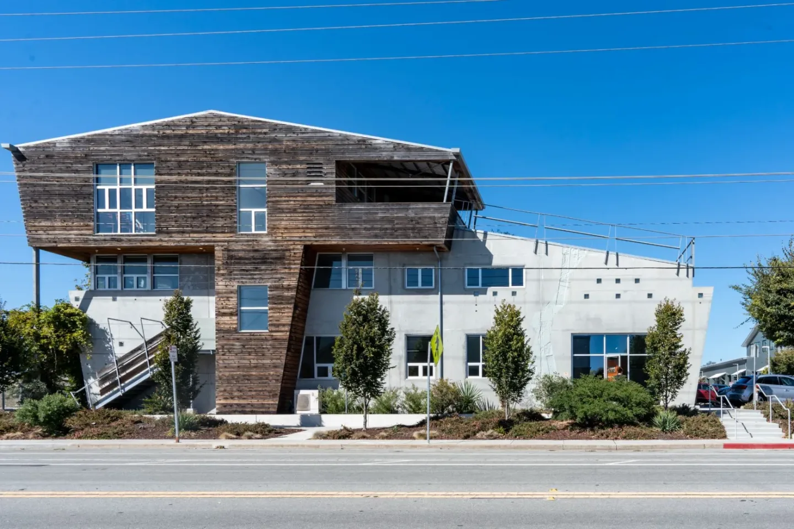

Event guide for 100 Panetta
What you need to arrange before your reservation, and what to check before you leave.
You have this link because you are listed as the Responsible Party for an event in the Panetta Conference Room. If that is not you, please let us know so we can send it to the right person and update the reservation.
Read this first
- This is a no-host space. Nobody from the Arts Division will greet your guests, let them in, or help during your event.
- Someone from your event must stay in the business lobby for the whole reservation to let guests and deliveries in.
- Do not prop the exterior or lobby doors open. Alarms will sound.
- Card key access has to be requested ahead of time, and everyone who needs access requests their own. Last-minute programming may not be possible.
- Enter through the Business Entry on Panetta Ave — not the IAS gallery entrance on Delaware Ave. Tell your guests.
- Your reservation window includes set-up and clean-up. Your card will not work outside it, so you cannot arrive early to set up.
What you are responsible for
As the Responsible Party you are the main contact for this event, and you are responsible for:
- Coordinating access to the building, including guest access throughout your event, and directing people to the correct entrance.
- Scheduling a walk-through before your event.
- Setting up and breaking down the tables and chairs, and cleaning.
- Being on site to meet catering and any other deliveries.
- Providing all supplies your event needs.
- Operating the AV equipment.
- Returning the room to a clean, organised set-up for the next event.
The details of each are below. Open any section to read it.
1.Card key access
Your UCSC ID card must be programmed before you can get into the 100 Panetta building — both the entry door and the interior lobby door.
- Access is programmed for the date and time of your event only.
- Everyone who needs access must submit their own request, up to three additional cardholders. Forward the link below to them before your reservation date.
- Everyone requesting access needs their own UCSC ID card and their 5-digit PIN. If you do not have a PIN you must set one, or one will be assigned.
- No UCSC ID card? Request one from ID Card Services.
Please plan ahead. Last-minute programming may not be available. Make sure everyone knows their PIN before the day.
2.Access for your guests
This is a no-host event space. You, or someone you assign, must remain in the business lobby throughout your reservation, or whenever guests and deliveries need to get in.
- It is your responsibility to identify your guests, let them into the building, and keep the building secure during your event.
- The Arts Division does not provide staff to greet, identify, or admit your guests.
- If a guest steps out during your event, someone from your event will need to let them back in.
A tip from other events: print a portrait sign for the entry door with the mobile number of someone at your event who can come down and let people in.
Propping exterior or interior lobby doors open is not allowed. Alarms will sound.
3.Building entry
- Event entry is through the Business Entry on Panetta Ave.
- Please do not use the IAS gallery entrance on Delaware Ave.
- Tell your guests which entrance to use before the day.
4.Schedule a walk-through
If this is your first time reserving the Panetta Conference Room, we strongly recommend booking a short walk-through before your event. It covers the building, access, the AV equipment, and what is expected of your event — and it is much easier than working it out on the day.
AV instructions are covered during the walk-through.
5.Set-up and break-down
Your reservation's start and end times include set-up and clean-up. As the Responsible Party you coordinate both, so plan the time accordingly.
- There may be other events before or after yours.
- Your key card is programmed only for your reservation window. If you arrive early, you may not be able to get in until your start time.
- Arts Division staff are not available to meet you or your vendors, or to let anyone in.
6.Deliveries and catering
You must arrange to meet vendors and caterers on site, in person, at both delivery and pick-up. Arts Division staff are not available to meet them.
Deliveries cannot arrive before your reservation starts, and items cannot be collected after it ends.
7.Supplies
As with other rooms you might reserve on campus, the Arts Division does not provide staff, tech support, or supplies for your event. Nobody will set up the room or the AV equipment for you.
Check the Space Details page to see exactly what is and is not included with the room.
8.AV equipment
Please review the AV resources page before your event.
If you are not comfortable connecting to a standard AV set-up, bring someone from your event who is. 100 Panetta staff will not be on site to help with AV.
9.End of your event
You are responsible for leaving the room clean and reset. We do not expect a particular layout, but we do require that you:
- Wipe down all tables, chairs and the lectern.
- Pair two chairs with each table, in any neat and usable arrangement.
- Return any extra chairs you took from storage to the chair rack.
Work through the end of event checklist below before you leave.
10.Questions
Please call or email if you have any questions, or if anything about your reservation changes.
When your event finishes, work through the checklist before you leave — it is the quickest way to be sure nothing has been missed.
Work through this at the end of your event, before you leave. It keeps the room ready for the next guests — and it is the fastest way to be sure you have not forgotten anything.
This is a no-host space: set-up and clean-up, including configuring the chairs and tables, are your event's responsibility. In reserving the space, your department agreed to the following.
All eleven done — thank you for leaving the room ready for the next event.
If Panetta staff have to complete any of these tasks, your department will be expected to cover the cost of returning the venue to its original condition.